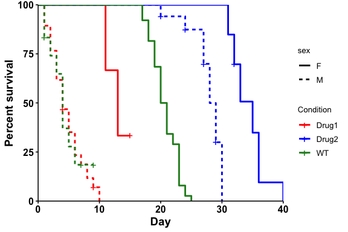

What does this package do?
ggbulksurv aims to simplify survival analysis for C.elegans and D.melanogaster by creating a user-friendly pipeline. Lifespan data for these organisms typically look like this, which is incompatible with current packages:
| condition | day | dead | censored |
|---|---|---|---|
| WT | 10 | 4 | 2 |
| Drug1 | 10 | 9 | 0 |
| … | … | … | …. |
In particular, we highlight these two features:
Convert lifespan data for GraphPad PRISM: Easily convert lifespan data into GraphPad PRISM compatible formats with the
pivot_prism()function.Easily customized survival curves in R: Use the
run_bulksurv()command for a default analysis (plot + stats). Customizations: subsetting data, changing colors, changing p-value adjustment methods, etc.
ggbulksurv is very much under active development, and any feedback and contributions are welcome through the Issues page.
Do I need this package?
If you are conducting lifespan studies with C.elegans and D.melanogaster - probably.
Installation
Install the following dependencies from CRAN. If you use the tidyverse, these should already exist:
install.packages(c("dplyr", "ggplot2", "janitor", "magrittr", "scales", "tidyr"))Install two other dependencies from Bioconductor:
if (!require("BiocManager", quietly = TRUE))
install.packages("BiocManager")
BiocManager::install(c("survival", "survminer"))You can install the development version of ggbulksurv from GitHub with:
install.packages("devtools")- For Mac users: If the above code gives an error, install Xcode. The easiest way to do this is via Homebrew, a convenient package manager which automatically installs Xcode.
devtools::install_github("qhuitan/ggbulksurv")Converting data for PRISM
library(ggbulksurv) # load librarypivot_prism() converts bulk survival data into a GraphPad PRISM-compatible format. Your input data file should be a csv with 4 columns: condition, day, dead, censored. Additional columns will be removed from the analysis.
data(sample_data)
dat <- sample_data # load fictional sample data
# Read in your data. Remove the # in front of the following line and replace the filename with your actual file
# dat <- read.csv("your-csv-file.csv")
df_prism <- pivot_prism(dat)
head(df_prism) # A quick look
#> # A tibble: 6 × 4
#> day Drug1 WT Drug2
#> <chr> <dbl> <dbl> <dbl>
#> 1 1 1 1 NA
#> 2 1 1 1 NA
#> 3 1 1 0 NA
#> 4 1 1 NA NA
#> 5 1 1 NA NA
#> 6 2 1 1 NA
# Export to csv
write.csv(df_prism, file = "lifespan_prism.csv")ggbulksurv (R)
1. Read in your data with read.csv().
Your data file should be a csv with 4 columns: condition, day, dead, censored. Additional columns (sex, genotype, treatment etc) are allowed and will be retained in this analysis.
Read in your .csv file with the following line of code:
data(sample_data)
dat <- sample_data # load example data
# Read in your data. Remove the # in front of the following line and replace the filename with your actual file
# dat <- read.csv("your-csv-file.csv")2. Run the survival analysis:
# Plot a survival curve
p <- run_bulksurv(dat,
print_stats = TRUE # print stats. FALSE by default
)
#> Joining with `by = join_by(x, condition, day, sex, status)`
#> call: formula = Surv(day, status) ~ condition
#> call: formula = Surv(day, status) ~ condition
#> $median_survival
#> Call: survfit(formula = Surv(day, status) ~ condition, data = df_isurv)
#>
#> n events median 0.95LCL 0.95UCL
#> condition=WT 50 47 20.0 19 21
#> condition=Drug1 50 46 4.5 4 6
#> condition=Drug2 50 42 33.0 32 35
#>
#> $logrank
#> Call:
#> survival::survdiff(formula = Surv(day, status) ~ condition, data = df_isurv)
#>
#> N Observed Expected (O-E)^2/E (O-E)^2/V
#> condition=WT 50 47 31.2 7.94 12.9
#> condition=Drug1 50 46 12.5 89.99 128.1
#> condition=Drug2 50 42 91.3 26.60 123.3
#>
#> Chisq= 186 on 2 degrees of freedom, p= <2e-16
#>
#> $pairwise
#>
#> Pairwise comparisons using Log-Rank test
#>
#> data: df_isurv and condition
#>
#> WT Drug1
#> Drug1 2.3e-14 -
#> Drug2 < 2e-16 < 2e-16
#>
#> P value adjustment method: BH
Plotting a mortality curve:
# Plot a mortality curve
p <- run_bulksurv(dat,
type = "mortality"
)
#> Joining with `by = join_by(x, condition, day, sex, status)`
#> call: formula = Surv(day, status) ~ condition
Custom formula:
p <- run_bulksurv(dat,
# Specify custom survival formula: condition + sex
formula = "Surv(day, status) ~ condition + sex",
# Split colors by condition column
color = "condition",
# Change linetype by sex column
linetype = "sex",
palette = c("red", "blue", "forestgreen"))
#> Joining with `by = join_by(x, condition, day, sex, status)`
#> call: formula = Surv(day, status) ~ condition + sex